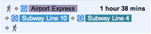
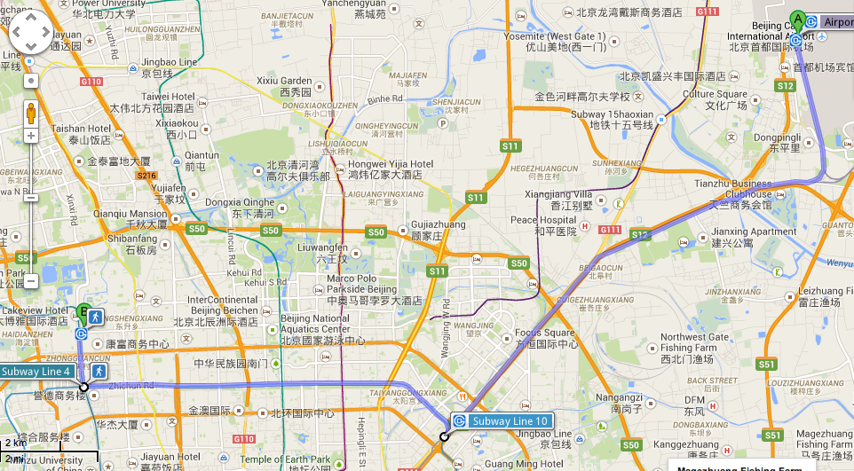
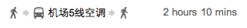
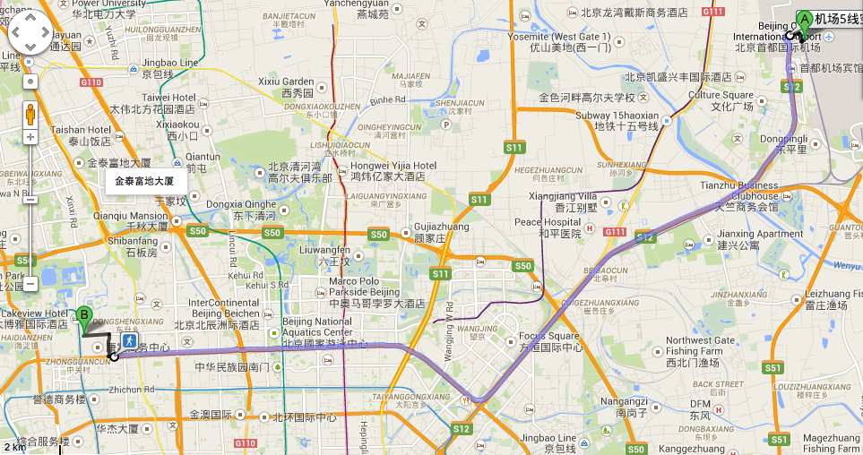

General Information
Please see http://www.icqc2015.org/ for 'General Information', which is also listed below.Visa Information and Invitation Letters
Visitors to China must have a valid passport and, in most cases, an appropriate Chinese visa.
Please check with your local Chinese Embassy or Consulate General for your visa application details at your earliest convenience.
In general, a Tourist Visa (L Visa) will suffice for you to attend the Conference.
Letter of Invitation from the conference organizers is not a requirement to apply for a Tourist Visa.
However, if it is required that a Business Visa (F Visa) is a must, you probably need a letter of invitation
and a Visa Notifications Form issued from the conference organizing institute.
To require the filled Visa Notification Form for your visa application purpose,
you will need to provide the photocopy of your passport and indicate it on your registration procedure.
An official invitation letter will also be issued and sent to those who have marked the box
"I need an official invitation letter to apply visa" on the registration form.
The issued letters will be sent by email or by fax. Individuals requiring original documents are requested
to specify their needs and allow for longer delivery time.
In case you need a formal letter of invitation or acceptance of your abstract for administrative purpose
such as applying for local financial support etc., please send us a request. A generic letter will be prepared for you.
International Transportation
Beijing Capital International Airport is located in the northeast of the city, about 30 km away from the conference site.
There are many airlines direct to main cities of
Asia, North America, Europe and Australia. Flights to other cities can be connected
in Hong Kong, Tokyo, Seoul, etc. For appropriate flights information correspond to
the country you are from, please contact your nearest travel agency.
It is very convenient to access the city from the airport by taxi or public transportation.
Option 1: Taxi
Taxi is a convenient choice. Fees are charged according to the taximeter. Fares should be paid in RMB cash.
It costs around RMB¥ 150 to get to College of Chemistry, Peking University (the main venue) or the hotels
we list in the Accommodation page from the airport.
Most taxi drivers cannot speak or understand English, so please show the card with Chinese address of the hotel to the driver.
They are clear enough for most Beijing taxi drivers.
For example, show the following card to the taxi driver, then he or she will take you to Peking University.
For the hotels listed in accommodation, we have prepared cards like this for each hotel.
Please download and print it according to your booked hotel.
请送我去北京大学东门。
地址：海淀区颐和园路5号东门（4号地铁站）。
地址：海淀区颐和园路5号东门（4号地铁站）。
Tips: Please remember only to take legal taxi with recognized logos/tags/paints in Beijing.
Option 2. Car hire or limousine service
Most hotels can arrange airport pickup and send off. You may also hire a car for a city tour. Check with your hotel concierge for information.
Option 3: Subway
Take subway Airport Express to the "Sanyuanqiao" station, then transfer to subway line 10 to the "Haidianhuangzhuang" station,
and then transfer to subway line 4 to the "East Gate of Peking University" station.
The map of the subway lines of Beijing is provided here  .
The running time of subway is listed below.
.
The running time of subway is listed below.
 .
The running time of subway is listed below.
.
The running time of subway is listed below.
| Route | Start → Destination | the first train | the last train |
|---|---|---|---|
| Airport Express | Beijing Capital International Airport → Sanyuanqiao | 6:52 AM | 23:27 PM |
| Line 10 | Sanyuanqiao → Haidianhuangzhuang | 6:07 AM | 23:51 PM |
| Line 4 | Haidianhuangzhuang → East Gate of Peking University | 5:47 AM | 23:47 PM |


Option 4: Airport Bus
Take airbus line 5, this will cost you RMB¥ 24 to "East Gate of Peking University", and the running time is 6:30 AM
to the next day 1:00 AM every 30 minutes.
Please check this website for more information.


Travelling
For more information on traveling around Beijing, please go to the Tours Information page.
Insurance
No responsibility can be assured for any kind of personal accidents, sickness, theft, or property damage suffered by conference participants.
Participants are advised to arrange whatever insurance they consider it necessary.